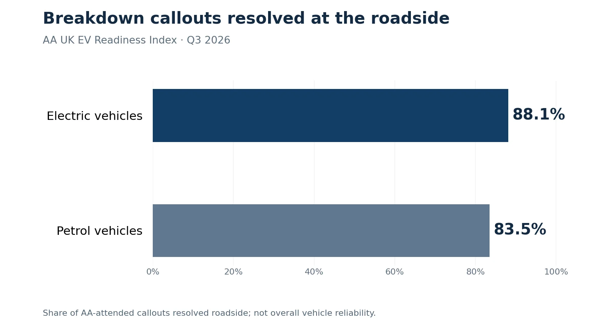
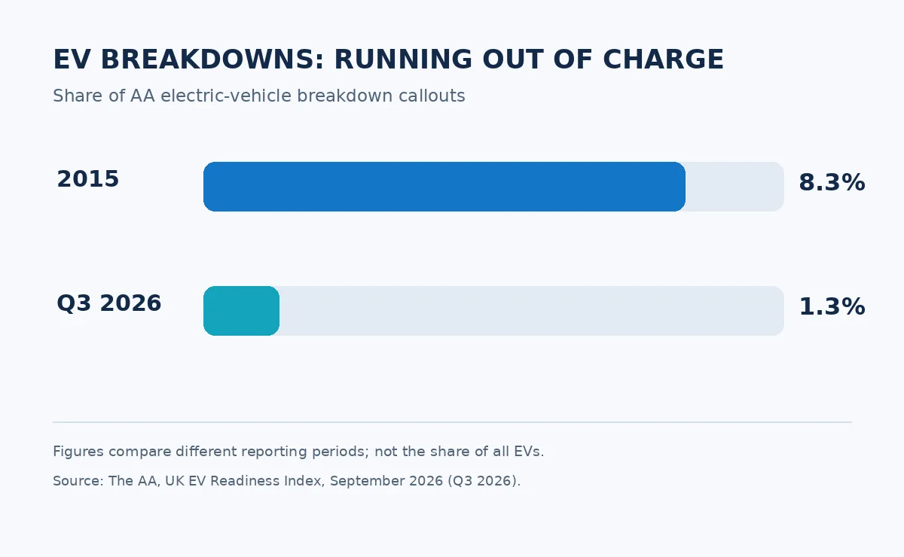
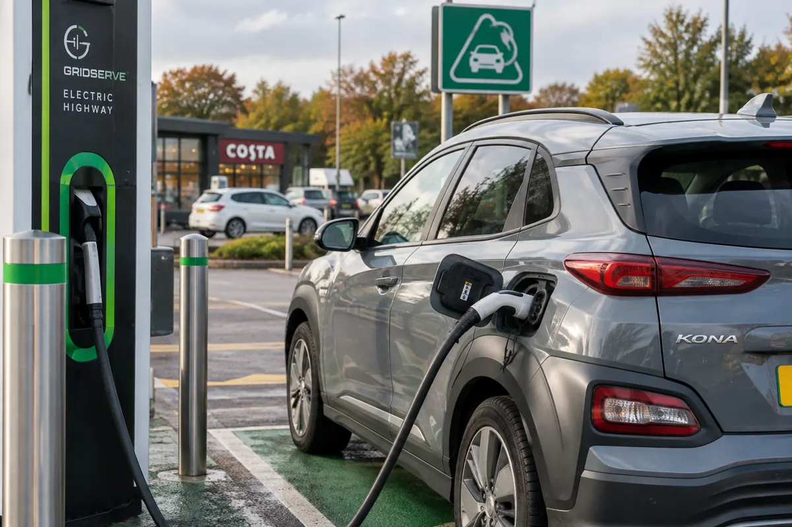
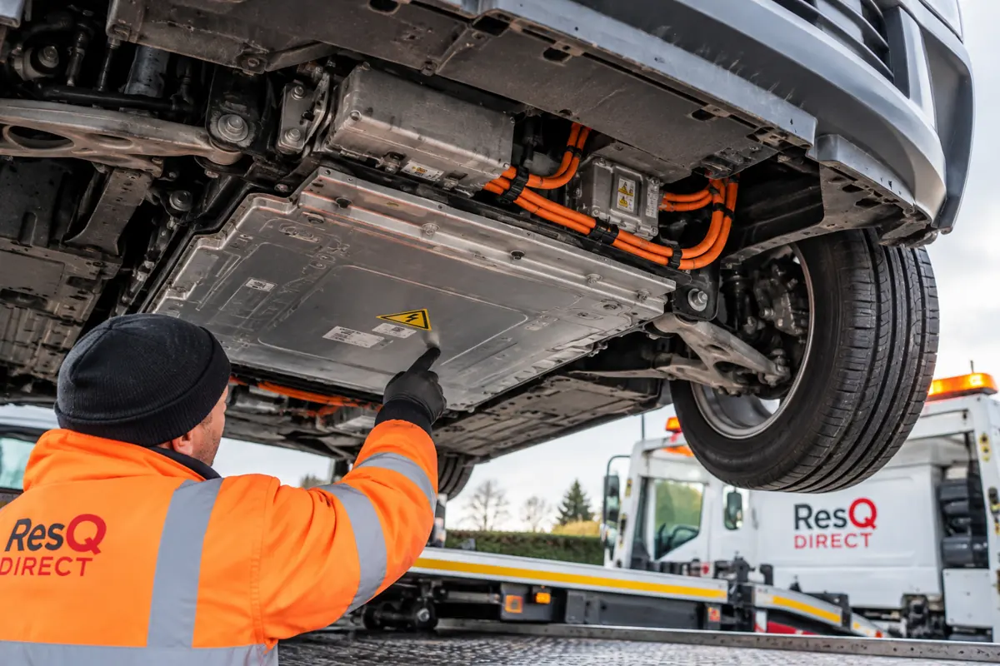

Electric and hybrid cars are increasingly common on British roads, but recovering them is not always the same as recovering a petrol or diesel vehicle. A breakdown might involve a puncture, low-voltage battery failure, charging fault or damaged suspension.
Many EV breakdowns can be resolved at the roadside. When the vehicle cannot continue, however, the way it is moved matters. This guide explains safe recovery principles using UK government guidance, manufacturer instructions and published breakdown figures.
Are Electric Cars More Difficult to Repair at the Roadside?
Electric vehicles are sometimes assumed to be harder to repair after a breakdown. However, figures reported by the AA’s UK EV Readiness Index for the third quarter of 2026 indicate that 88.1% of electric vehicle callouts and 83.5% of petrol vehicle callouts were resolved at the roadside.
These percentages describe AA-attended breakdowns; they do not measure how frequently each type of vehicle breaks down.

Many faults can be dealt with without moving the vehicle. When recovery is required, however, the correct transport method matters.
How Common Is Running Out of Charge?
Range anxiety is a familiar concern, but running out of charge represents a relatively small share of AA EV breakdown callouts. The AA has reported a reduction from 8.3% in 2015 to 1.3% in Q3 2026.

Charging faults and depleted batteries can still leave a driver unable to continue their journey.

What Causes Electric Cars to Break Down?
EVs still have tyres, suspension, brakes and electrical systems. Some faults are common to all vehicles; others depend on the powertrain.
| Breakdown problem | Electric car | Petrol or diesel |
|---|---|---|
| Flat or damaged tyre | Yes | Yes |
| Wheel or suspension damage | Yes | Yes |
| Low-voltage battery failure | Yes | Yes |
| Running out of energy | Depleted traction battery | Empty fuel tank |
| Charging system fault | Possible | Not applicable to conventional petrol/diesel cars |
| Conventional engine failure | No combustion engine in a battery EV | Possible |
| Electric drivetrain fault | Possible | Depends on vehicle |
A puncture might be repaired at the roadside. A car with damaged suspension, locked wheels or an electrical fault may need transporting. Our non-running vehicle transport guide explains what to tell a transporter.
Can You Tow an Electric Car With a Rope?
UK Department for Transport guidance explains that rotating wheels can generate electrical current through an electric motor, with a risk of damaging high-voltage components. Suitable methods can include a flatbed, a correctly rated transport trailer or appropriate wheel dollies.
| Method | What to know |
|---|---|
| Flatbed recovery truck | Generally preferred, subject to condition and loading instructions |
| Vehicle transport trailer | May be suitable with correct capacity and loading procedure |
| Wheel lift and dollies | May be appropriate when relevant wheels are supported |
| Conventional tow rope | Generally unsuitable for normal EV towing |
| Short move out of danger | May be allowed under specific safety conditions; not normal road towing |
Limited movement to clear immediate danger is not the same as towing a car to a garage.
What Is Tow Mode?
Some electric vehicles offer Tow Mode or Transport Mode. It may help a recovery operator move the car onto equipment, but it does not automatically make normal road towing safe.
For example, Tesla's Model 3 transporter instructions describe model-specific loading procedures. Always use the instructions for the exact vehicle.
Can a Flat 12V Battery Immobilise an EV?
An EV generally has a high-voltage traction battery and a separate low-voltage electrical system. The low-voltage system can control functions needed to unlock the car, release its parking brake or prepare it for loading.
Even if the traction battery has charge, a low-voltage failure may prevent the vehicle from moving normally. Tell the operator whether the vehicle powers on and whether the brakes and steering can be operated.
Why Does EV Weight Matter?
Some EVs weigh more than comparable combustion-engine models because of their batteries, although actual weight varies considerably. Recovery equipment must be suitable for the vehicle's actual mass, dimensions and loading condition.
Heavy SUVs, accident damage and inaccessible wheels can change what equipment is needed. The operator should assess these factors before accepting a job.
Are Hybrid Cars Different?
Conventional hybrids, plug-in hybrids and mild hybrids have different drivetrains. They should not all be treated as ordinary petrol cars when arranging recovery.
Identify the exact make, model and hybrid type, and follow its manufacturer's recovery instructions.
What About an Accident-Damaged Electric Vehicle?
Following a collision, damaged high-voltage systems or a battery pack may present additional risks. The Department for Transport's EV recovery guidance discusses electric shock, chemical exposure and fire hazards.
Possible warning signs include:
- Smoke, vapour or signs of overheating
- Unusual hissing, popping or other noises
- Unusual chemical smells
- Visible damage around the battery or high-voltage components

Electric Vehicle Recovery in Peterborough and Cambridgeshire
Electric vehicles are an increasingly familiar sight in Peterborough and surrounding areas. The Department for Transport publishes local-authority vehicle licensing tables, but registered vehicle counts are not the same as local breakdown or recovery totals.
We have not included an unverified figure for how many EVs were recovered in Peterborough in 2025. For local drivers, the practical priority is identifying a suitable recovery method for the individual vehicle.
ResQ Direct provides vehicle recovery in Peterborough and surrounding areas, with planned vehicle transport across Great Britain. For an electric or hybrid vehicle, provide the make, model and condition so the proposed arrangements can be assessed.
Does Electric Car Recovery Cost More?
Not necessarily. An EV is not automatically more expensive to recover simply because it is electric. A quotation may depend on the collection and delivery points, distance, size, weight, access, wheel condition, accident damage and any additional loading requirements.
Give accurate details before booking so the operator can assess the job. We have not included invented UK-wide or Peterborough-specific prices.
What Should You Tell the Recovery Operator?
- Vehicle make, model and approximate year
- Whether it is fully electric, plug-in hybrid or another hybrid type
- Collection and delivery locations or postcodes
- Whether it powers on
- Whether the wheels roll and the steering works
- Whether the parking brake releases
- Whether it has been involved in a collision
- Any battery warnings, smoke, unusual smells or visible damage
Photographs can help when a vehicle is damaged or difficult to access.
Frequently Asked Questions
Can an electric car be transported on a trailer?
Yes, where the trailer and loading procedure are suitable for the vehicle and follow manufacturer guidance.
Can you tow a Tesla?
Tesla publishes model-specific transporter instructions. For the Model 3, flatbed transport is recommended; Tow Mode is not permission for unrestricted towing.
Do EVs often run out of charge?
The AA reported that running out of charge accounted for 1.3% of its EV callouts in Q3 2026. This is not the percentage of all EVs that run out of charge.
Can an EV with a flat 12V battery be recovered?
Often yes, but special procedures may be needed if it cannot release its parking brake or enter a loading mode.
Can a hybrid car be towed?
It depends on its drivetrain and manufacturer's instructions.
Is electric vehicle recovery dangerous?
Routine recovery can be carried out with appropriate procedures. Damaged high-voltage components and unstable batteries require extra precautions and potentially specialist assessment.
The Simple Rule to Remember
An EV is not necessarily harder to repair at the roadside, but it may require a different method of transport when recovery is needed.
Sources
Reference guidance and published breakdown figures consulted for this guide. Always check the latest manufacturer instructions for the particular vehicle.
NEED VEHICLE RECOVERY OR TRANSPORT?
Need your electric or hybrid vehicle transported?
Tell ResQ Direct where the vehicle is, where it needs to go and what you know about its condition.
GET A QUOTE